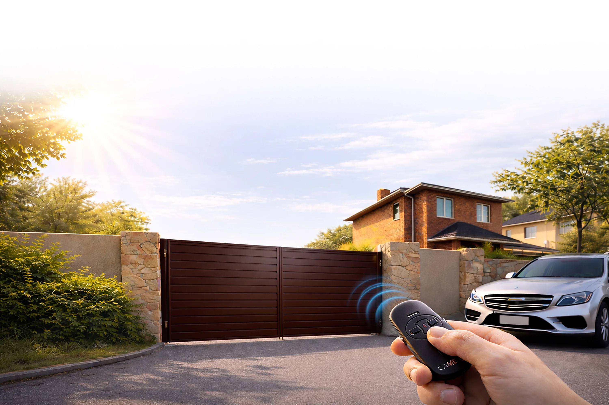

Изготавливаем ворота под размеры вашего въезда. Створка уходит вдоль забора — место перед воротами остаётся свободным. Подберём заполнение, фурнитуру и автоматику под условия участка.
Начать можно с известных размеров и фотографий. Если чего-то не знаете, оставьте для уточнения — точный состав работ согласуем по вашему объекту.
Место для движения створки, основание и подбор управления.
Сначала нужно проверить зону вдоль забора по схеме будущих ворот. Если створке негде откатываться, стоит сравнить участок с требованиями распашной конструкции. По одной ширине въезда выбрать схему нельзя.
Нужно проверить его размеры, расположение и пригодность для выбранной конструкции. Для начала пришлите фото и известные параметры основания; возможность использования уточняется при оценке объекта.
Нет, можно согласовать ручное управление. Если автоматика нужна сразу или планируется позже, об этом лучше сказать при подборе каркаса и фурнитуры.
От размеров проёма, каркаса и заполнения, фурнитуры, покрытия и автоматики, а также от необходимости фундамента и монтажа. Точный состав работ и стоимость согласуются для конкретного объекта.